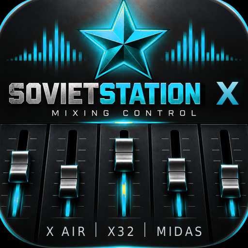

Управление цифровым микшером с планшета.
Behringer X32 и X Air, Midas M32 и MR — по Wi-Fi.
Бесплатно · Android 7.0+ · без аккаунта и без интернета
| Семейство | Модели | Связь |
|---|---|---|
| X32 · M32 | X32, Compact, Producer, Rack, Core, M32, M32R, M32C, M32 Live | OSC, UDP 10023 |
| X Air · MR | XR12, XR16, XR18, X18, MR12, MR16, MR18 | OSC, UDP 10024 |
Midas M32 и MR — та же платформа, что X32 и X Air, поэтому работают так же.
Фейдеры, mute, соло, панорама, имена и цвета каналов, DCA, группы мьютов.
Преамп, фильтр, гейт, компрессор, четырёхполосный EQ, инсерты, назначения.
По каналу и по шине, включая матрицы. Видно, куда и сколько уходит.
Тип слота, параметры, уровни посыла и возврата, графический EQ.
С пульта или с микрофона планшета, со спектрограммой под фейдерами EQ.
Сохранение и загрузка на пульте, плюс локальные снимки состояния.
Плеер на компьютере, которым управляют с того же планшета по той же сети.
Приложения нет в Google Play, поэтому ставится файлом.
Отдельная программа для компьютера — плейлист, транспорт, перемотка, громкость. Управляют ею не с компьютера, а с планшета, с того же экрана, где пульт: вкладка «ПЛЕЕР» сама находит компьютер в сети. Удобно, когда ноутбук с фонограммами стоит на сцене, а вы за пультом в зале.
Компьютер и планшет — в одной сети Wi-Fi, той же, где пульт. Ставить ничего не нужно: ни .NET, ни Python, ни кодеков.
Архив: SovietStationPlayer.exe и firewall.cmd.
Распакуйте куда угодно, хоть на флешку, — двойной щелчок по exe, и всё. Папку с фонограммами достаточно перетащить
на значок, она сразу попадёт в плейлист.
Архив с приложением SOVIETSTATION.app внутри. Распакуйте и положите в «Программы».
macOS 11 и новее, Apple Silicon и Intel.
Папка с фонограммами выбирается в окне плеера кнопкой «ВЫБРАТЬ ПАПКУ».
SmartScreen скажет «Windows защитила ваш компьютер» — у файла нет платной
подписи. «Подробнее» → «Выполнить в любом случае».
Брандмауэр спросит, пускать ли плеер в сеть. Разрешите обязательно для
частных сетей, а если Windows считает сеть пульта общедоступной — то и для них.
Без этого планшет плеер не увидит. Окно закрыли не глядя — запустите
firewall.cmd из архива, он откроет нужные порты.
Приложение не подписано сертификатом Apple, поэтому macOS откажется его открыть. Привычный приём «правый клик → Открыть» Apple убрала начиная с macOS Sequoia. Сейчас так: попробуйте открыть приложение, получите отказ, затем откройте Системные настройки → Конфиденциальность и безопасность, пролистайте вниз — там появится кнопка «Всё равно открыть». Подтвердите паролем. Один раз.
Форматы: mp3, m4a/aac, wav (включая 24 и 32 бита), flac, alac, wma, aiff. Закрыли окно плеера — плеер остановлен.
Отчёт о сбое пишется сам. Запустите приложение снова — на первом экране будет красная панель «Прошлый запуск завершился сбоем». Нажмите «Отправить отчёт» или просто снимите скриншот и пришлите в Issues.
В отчёте только техническая часть: версия Android, место в коде, строка ошибки. Ни настроек, ни имён каналов, ни адресов там нет.
Приложение разговаривает только с пультом в вашей локальной сети и, если вы его включите, с плеером на вашем компьютере. Наружу не уходит ничего: аналитики нет, аккаунтов нет, в интернет оно не ходит вовсе. Микрофон спрашивается только когда вы сами переключаете анализатор на микрофон планшета — звук никуда не пишется и не отправляется.
Это рабочий инструмент, которым пользуются на концертах, но пишет его один человек, и проверить все модели на живом железе невозможно. Перед первым выступлением прогоните приложение на своём пульте в спокойной обстановке.